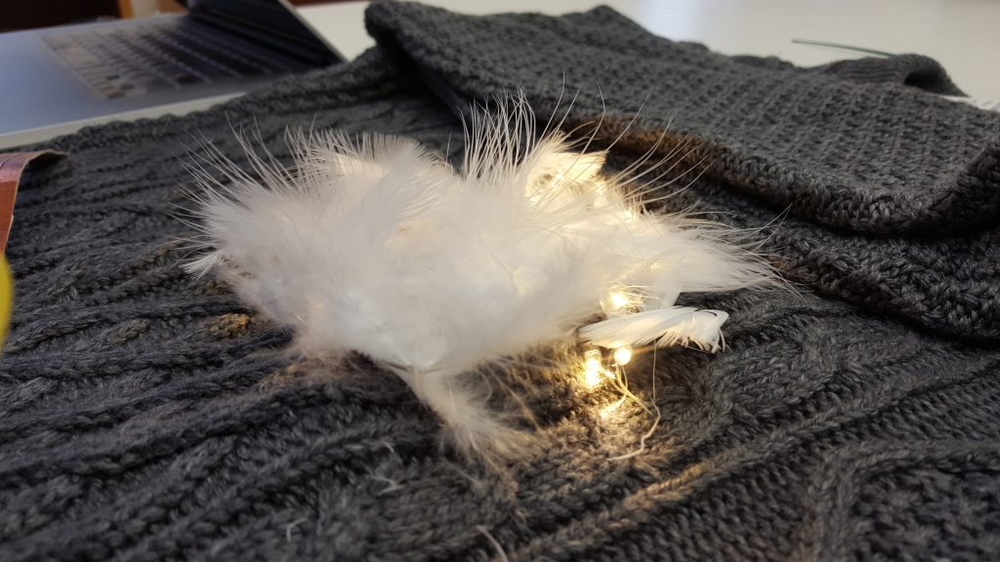
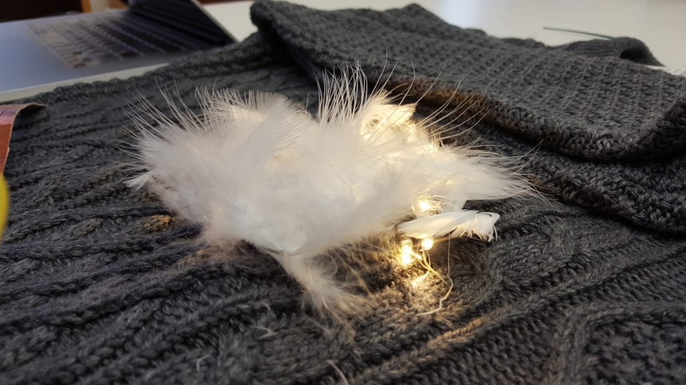

MoonGaze
Created using Arduino IDE, C, Feather M0 and PubNub
Summary
A wearable interactive partner finder. A project by Yiyi Shao and Finlay Braithwaite for DIGF6037, Creation and Computation, Digital Futures, OCAD University.
My responsibilities: concept developing, designning, physical making
Full report can be found at here
Objective
人有悲欢离合，月有阴晴圆缺，此事古难全。但愿人长久，千里共婵娟 — 苏轼 《水调歌头》
Translation: The moon does wax, the moon does wane, and so men meet and say goodbye. May we all be blessed with longevity though far apart, we are still able to share the beauty of the moon together.
Our idea inspired by an old well-known Chinese poem Shui Diao Ge Tou by Shi Su (also known as Tungpo Su, 1037 – 1101). This poem describes the poet himself traveling long distances and missing his family. The moon is a comfort to him because no matter how far people are separated, they are still watching and sharing the beauty of the same moon. Chinese people still carry on this tradition as part of the Mid Autumn Festival. Moon gaze is a contemporary take on this desire for long distance connectedness through facing one another. With Moon Gaze, one can find, face, and connect with their partner irregardless of physical distance.
Action
We choose to hack knit sweaters for our project, as they allow us to weave a string of LEDs into the knit itself. We went to Uniqlo to find suitable sweaters. In the men’s clothing section we found dark grey knits that perfectly mimic the dark night sky, a perfect backdrop for our moons.
 


Exhibits
Creation & Computation Final Show
Grad Gallery, OCAD University, December 2017
DF Open Show
Grad Gallery, OCAD University, February 2019